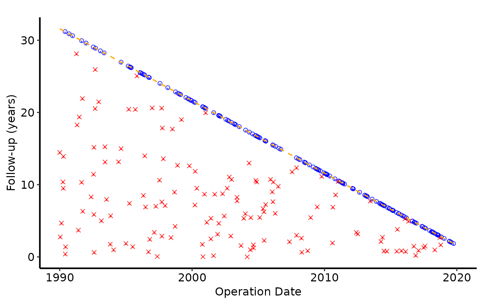

Converts raw follow-up extracts (either in-memory data frames or SAS
transport files) into tidy frames, then draws the classic HVI goodness of
follow-up death panel. For the non-fatal event panel use
goodness_event_plot().
Usage
goodness_followup(
data,
iv_opyrs_col = "iv_opyrs",
death_col = "dead",
death_time_col = "iv_dead",
origin_year = 1990,
study_start = as.Date("1990-01-01"),
study_end = as.Date("2019-12-31"),
close_date = as.Date("2021-08-06"),
tolower_names = TRUE,
death_levels = c("Alive", "Dead"),
alpha = 0.8,
segment_drop = 0.2,
diagonal_color = "orange",
diagonal_linetype = "dashed",
diagonal_linewidth = 0.6
)Arguments
- data
Data frame or path to a SAS transport (
.xpt) file containing the follow-up data.- iv_opyrs_col
Column name holding the numeric interval (in years) from
origin_yearto the operation date.- death_col
Logical (or coercible) indicator for death. Used for the death panel and, by default, for the death component of the event panel.
- death_time_col
Column containing follow-up time to death (or censoring) expressed in years.
- origin_year
Reference calendar year that matches zero in
iv_opyrs_col.- study_start, study_end, close_date
Dates that define the diagonal potential follow-up line.
- tolower_names
When
TRUE, column names are converted to lower case prior to processing.- death_levels
Length-2 character vector naming the "alive" and "dead" states for the death panel. Default
c("Alive", "Dead").- alpha
Transparency passed to the point and segment layers.
- segment_drop
Amount (in years) subtracted from each follow-up value to draw the short vertical tick beneath each point.
- diagonal_color
Color of the potential follow-up reference line. Default
"orange".- diagonal_linetype
Line type of the reference line. Default
"dashed".- diagonal_linewidth
Line width of the reference line. Default
0.6.
Value
A ggplot2::ggplot() object (death panel). Compose with
scale_color_manual(), scale_shape_manual(), labs(), and
hvti_theme(). For the event panel use goodness_event_plot().
Details
The function focuses on preparing the data, mapping states to aesthetics,
and drawing the scaffolding geoms; callers are expected to finish the styling
via standard ggplot2 modifiers (scale_*(), labs(), theme_*()),
keeping the plotting workflow flexible.
Examples
dta <- sample_goodness_followup_data()
goodness_followup(dta) +
ggplot2::scale_color_manual(
values = c("Alive" = "blue", "Dead" = "red"), name = NULL
) +
ggplot2::scale_shape_manual(values = c(1, 4), name = NULL) +
ggplot2::labs(x = "Operation Date", y = "Follow-up (years)") +
hvti_theme("manuscript")
